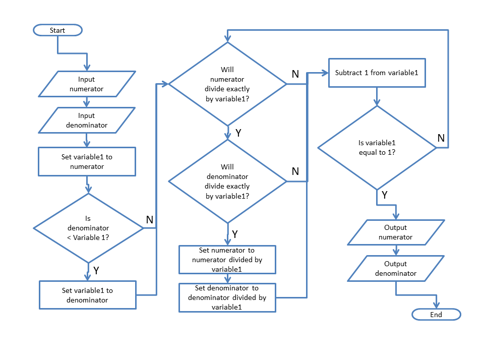

Ash Manor School
Computing Department
Fractions
In this unit we will be exploring the difference between real and fractional numbers. This is an ICT unit we will be focussing on the Algorithms and procedures involved, as opposed to the general mathematics. The optional tasks at the end will focus ofn programming a computer to be able to perform mathematical tasks using the python programming language.
Aims
This is an introduction to your unit.
This unit addresses the algorithmic (alg) and programming (P&D) sections of the national Curriculum. For the year 2015 non-GCSE computing students will not necessarily have the backgrouond in Computing required to perform the Programing and development secetions. These components are addressed in the optional tasks for higher achievers, and GCSE computing students.
By the end of this unit you will learn:
- Level 5
- (Alg) Recognises that different algorithms exist for the same problem.
- (Alg) Represents solutions using a structured notation.
- (Alg) Can identify similarities and differences in situations and can use these to solve problems (pattern recognition).
- (P&D)Understands that programming bridges the gap between algorithmic solutions and computers.
- (P&D) Has practical experience of a high-level textual programming language.
- Level 6
- (alg) Understands a recursive solution to a problem repeatedly applies the same solution to smaller instances of the problem.
- (alg)Recognises that some problems share the same characteristics and use the same algorithm to solve both (generalisation).
- (alg) Understands the notion of performance for algorithms and appreciates that some algorithms have different performance characteristics for the same task.
- (P&D) Uses nested selection statements.
- (P&D) Appreciates the need for, and writes, custom functions including use of parameters.
- (P&D) Knows the difference between, and uses appropriately, procedures and functions.
- (P&D) Understands and uses negation with operators.
- (P&D) Uses and manipulates one dimensional data structures.
- (P&D) Detects and corrects syntactical errors.
Activity 1
Literacy introduction
Learning aims:
- L5 (Alg) Recognises that different algorithms exist for the same problem.
- L5 (Alg) Represents solutions using a structured notation.
- L5 (Alg) Can identify similarities and differences in situations and can use these to solve problems (pattern recognition).
Starter Task
An algorithm is a set of instructions that lead to a result.
We use algorithms in Home Economics for making a product, like a cake, these algorithms are presented as the ______.
We use an algorithm in Home Economics for making a product, like a dress, These algorithms are presented as a ______
We use algorithms in our science lessons to describe how to perform an experiment. These Algorithms are presented as the ______
We use an algorithm to find our way to a place we have never been to before, this algorithm might be presented as _______
The missing words in the above sentences can be unjumbled from:
- cri pee
- tan pret
- dot meh
- l pout near
Create a word document, put your answers at the start in full sentences.
Activity 2
Algorithmic Exercise
Learning aims:
- To be able to use a flow chart which formally describes an algorithm.
Task 1
An algorithm describes a process.
Lets examine the algorithm and think about its parts
Questions
- What shape is used to denote the start and end of the process
- What shape is used to denote data being input or output?
- What shape is used to denote a process?
- What shape is used to denote a decision (a question)?
- When a question is asked how many possible answers should there be?
In a flow chart shapes have meaning and are important
Task 2 - Testing an algorithm
When we test an algorithm we should start by drawing a table with one column for each of the variables. A variable is a store for an item. In this algorithm there are three variables - Numerator, denominator and variable 1.
Insert variables and testing video.
Questions
- What are the inputs to the process mapped out in the algorithm described?
- What are the outputs from the algorithm described
- Sum up in your own words - what does the algorithm do?
- Make a testing table to show how the algorithm works with the following inputs
| Numerator | Demoninator |
|---|---|
| 4 | 12 |
| 7 | 49 |
| 24 | 12 |
| 162 | 36 |
| 135 | 120 |
Put your answers in a word document, and upload your word document to the moodle.
Activity 3
Visual Literacy exercise.
Learning aims:
- To be able to use a flow diagram to explain a process.
Making our own flow charts
A good piece of software for creating flow charts is microsoft PowerPoint. PowerPoint allows us to create a large image with a number of templates already provided.
Insert video explanation here
Questions
- Use a flow chart to explain how to multiply two fractions.
- Use a flow chart to explain how to make two fractions have the same denominator
- Use a flow shart to explain how to add two fractions
- Use a flow chart to explain how to divide a fraction by another fraction.
Use a flow chart to explain how to multiply two fractions.
Activity 4
Pseudocode testing exercise
Learning aims:
- Specific aims for Acivity
This is a section of pseudo code.
1. BEGIN
2. INPUT 'Number1'
3. INPUT 'Number2'
4. SET answer to 0
5. WHILE Number1 >0
6. If number1 is Odd:
7. answer = answer + Number2
8. Number2 = 2*Number2
9. Number1 = Number1 / 2
10. OUTPUT answer
11. END
Questions
- What are the three variables used in this algorithm?
- Test this algorithm with the following inputs
- Show your testing of this algorithm in a table
- What does this algorithm do?
- This algorithm is written in pseudocode - rewrite the algorithm from task 1 in pseudocode
| Number1 | Number2 |
|---|---|
| 3 | 4 |
| 4 | 3 |
| 3 | 7 |
| 8 | 8 |
| 6 | 9 |
| 5 | 11 |
| 6 | 11 |
| 52 | 24 |
Activity 5
Learning aims:
- To use pseudocode to express algorithms.
Rewrite the algorithms you wrote in Activity 3 in pseudocode.
Activity 6
Programming exercise.
Learning aims:
- To use the python programming language to convert your algorithms into code.
Write programs to perform the algorithms you wrote in activity 5